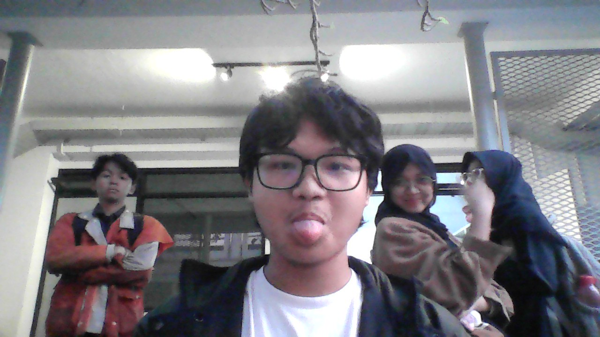

1 UTS-1 All About Me

Nama saya M. Okto Huzainy, atau teman-teman biasa memanggil saya Huzein. Saat ini saya menempuh pendidikan di Sekolah Teknik Elektro dan Informatika, Institut Teknologi Bandung (STEI ITB). Saya lahir dan besar di Kota Bandar Lampung, tempat di mana saya belajar arti kerja keras dan ketekunan. Sejak kecil saya gemar berolahraga—terutama sepak bola dan futsal—namun seiring waktu saya menemukan panggilan baru dalam dunia informatika dan teknologi. Saya ingin berkontribusi bagi bangsa melalui bidang keamanan siber dan pengembangan sistem informasi yang lebih kuat di Indonesia.
Saya dikenal sebagai pribadi yang tenang dan pendiam, tapi selalu terbuka untuk berbagi cerita jika diajak berbincang. Saya percaya bahwa daya tarik seseorang bukan hanya dari penampilan atau prestasi, melainkan dari kemampuan untuk terus belajar, bertumbuh, dan bangkit dari kegagalan. Moto hidup saya sederhana: “Don’t be afraid to fail. It is through failure that we learn and grow.”
Apa kisah yang membentuk diri saya?
1.1 Kisah yang Membentuk Diri: Dari Bola ke Baris Kode
Sejak kecil, saya terbiasa menantang diri untuk mencoba hal-hal baru. Lapangan futsal adalah tempat saya belajar arti kerja sama dan ketekunan. Namun, perjalanan hidup membawa saya ke medan yang berbeda: layar komputer. Di sana saya menemukan dunia yang tidak kalah seru, penuh strategi dan logika, sama seperti permainan bola, hanya saja kali ini lawannya adalah bug dan algoritma.
Saya tidak selalu menang. Ada banyak kegagalan—dari kalah di lomba matematika hingga program yang tidak berjalan sesuai harapan. Tapi justru di situlah saya belajar. Setiap kegagalan memberi saya arah baru. Ketika saya harus melepaskan waktu bermain futsal demi fokus di olimpiade matematika, saya sempat kecewa. Namun keputusan itu membuka jalan bagi saya untuk mengenal dunia informatika, dan dari sanalah perjalanan saya benar-benar dimulai.
Perjalanan ini tidak mudah. Saya sempat bingung menentukan arah: tetap di matematika atau beralih ke informatika? Akhirnya, saya memutuskan untuk menekuni keduanya, karena bagi saya keduanya adalah cara berbeda untuk memahami dunia dengan logika. Dan ketika akhirnya saya diterima di Institut Teknologi Bandung, saya merasa semua perjuangan dan kegagalan itu bukan kebetulan—semuanya adalah bagian dari cerita penebusan diri saya.
1.1.1 Tiga Lapisan Diri: Menemukan Jati Diri Saya
Level 1: Sifat Dasar — Saya adalah orang yang cenderung pendiam, tekun, dan suka bekerja sendiri, tetapi juga sangat menikmati kolaborasi jika tujuannya jelas.
Level 2: Kepedulian Pribadi — Saya menjunjung tinggi kerja keras, kejujuran, dan semangat untuk belajar hal baru. Saya ingin keahlian saya membawa manfaat bagi banyak orang.
Level 3: Identitas Naratif — Cerita hidup saya adalah perjalanan dari lapangan bola ke dunia informatika. Sebuah kisah tentang bagaimana setiap kegagalan justru menempa saya untuk menjadi lebih kuat.
Saya menyadari bahwa saya tidak bisa mengubah masa lalu, tetapi saya bisa mengubah cara saya memaknainya. Setiap peristiwa yang dulu terasa mengecewakan, kini menjadi bab penting dalam cerita pertumbuhan diri saya.
1.1.2 Pola Kisah Hidup Saya: Dari Penebusan ke Agensi
Saya melihat hidup saya sebagai cerita penebusan—dari kegagalan menuju pembelajaran dan keberhasilan. Saya pernah kalah, tersesat, bahkan merasa ragu pada kemampuan sendiri. Namun dari pengalaman-pengalaman itulah saya belajar untuk bertanggung jawab atas pilihan saya dan menjadi aktor utama dalam hidup saya sendiri. Saya bukan korban keadaan, tapi penulis cerita saya sendiri.
Ketika saya kembali memilih dunia informatika, saya tahu itu bukan keputusan mudah. Tapi saya ingin menjadi bagian dari generasi yang bukan hanya menggunakan teknologi, melainkan juga menciptakannya dan melindunginya. Di situlah saya menemukan makna baru dari perjalanan saya.
1.1.3 Seni Memberi Makna: Mengubah Kegagalan Jadi Kekuatan
Saya belajar bahwa kegagalan bukan akhir dari segalanya, tetapi awal dari perubahan. Setiap kesalahan, setiap percobaan yang gagal, memberi saya wawasan baru. Saya mulai melihat hidup saya bukan sebagai rangkaian peristiwa acak, melainkan sebagai proses panjang untuk memahami diri dan tujuan. Semakin saya belajar, semakin saya yakin bahwa makna hidup bukan ditemukan begitu saja, tapi diciptakan melalui usaha dan refleksi.
1.1.4 Kesimpulan: Menulis Kisah Hidup Saya Sendiri
Hidup mengajarkan saya untuk menjadi penulis kisah saya sendiri. Saya tidak lagi hanya menjaga gawang di lapangan futsal, tapi kini berusaha menjaga keamanan data dan informasi di dunia digital. Saya percaya setiap orang memiliki “momen berkilau” yang bisa menjadi sumber kekuatan dan inspirasi. Bagi saya, momen itu adalah ketika saya memutuskan untuk bangkit setelah gagal, dan terus berjuang untuk mimpi saya di dunia teknologi.
Saya masih terus menulis kisah ini—bab demi bab, dengan semangat yang sama seperti dulu di lapangan: pantang menyerah, penuh strategi, dan selalu siap menebus kesalahan dengan usaha yang lebih baik. Karena pada akhirnya, daya tarik sejati bukan terletak pada kesempurnaan, melainkan pada keberanian untuk terus tumbuh.